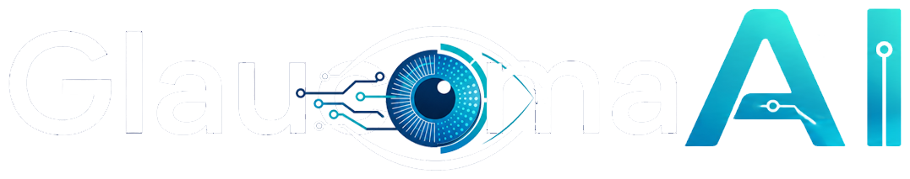

GlaucomaAI
AI-powered glaucoma pre-screening system - live in production
- Deployed and running at glaucoma-ai-screening.com, HTTPS, AWS EC2, Docker, automated GitHub Actions CI/CD deployment
- Built a full-stack platform: FastAPI and PostgreSQL backend, React and Vite frontend, plus a Go microservice for PDF report generation
- Engineered a three-CNN ensemble (EfficientNetB0, VGG16, EfficientNetV2), achieving AUC 0.93, 85% sensitivity on a locked 415-image test set
- Compared four LLMs (GPT-4o, GPT-4o-mini, GPT-OSS 120B, Gemini) for automated referral letter generation across 180 letters
- Accepted for camera-ready publication at IEEE MIPR 2026 (first author) - built solo in one university trimester